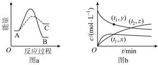

← 返回小玉讲题 · 小岩讲真题
📖 跟我一步步解题 · 2026广东卷·15 · 能量图＋浓度图双图联读
读图 → 对号 → 守恒求证
👈 用法：点一下白板看
审题要点
；之后每一步
先自己想
，想出思路再点一下，对照小玉的板书。做完全题有奖励！
物质
A(g)
可同时转化为它的同分异构体
B(g)
和
C(g)
，其反应过程的能量变化如图 a，某温度下，测得恒容密闭容器中各组分浓度 c 随时间 t 的变化如图 b，则

图a：反应过程的能量变化；图b：各组分浓度随时间变化
A.
t
1
时，体系中物质的质量：m(A)=2m(B)
B.
图 b 中数据满足关系：2z＞x+y
C.
体系中，反应 A(g)⇌C(g) 先达到平衡
D.
体系平衡后，升高温度，B 的体积分数增加
1
🔍 先读图 a：两条曲线一实一虚，峰高和终点高低各自说明什么？
能量图读三件事：峰高=活化能（速率），终点=稳定性，全程=反应热
🔴
实线 A→B
：峰
高
（E
a
大、慢）＋ B 能量
低
（放热多、稳定）
🔴
虚线 A→C
：峰
低
（E
a
小、快）＋ C 能量
高
（不稳定）
C 是「动力学产物」（生成快）；B 是「热力学产物」（平衡时多）——快≠多！
2
💭 图 b 三条曲线，谁是谁？(t₂, z) 这个点特殊在哪？
对号入座：降者是反应物，升者是产物
下降曲线 =
A
；先陡后低平 =
C
（快而少）；先缓后高平 =
B
（慢而多）
(t
1
, y) 在 A 上 → c(A)=y；(t
1
, x) 在 B 上 → c(B)=x
(t
2
, z) 是
两条产物曲线的交点
→ c(B)=c(C)=
z
（题眼！）
3
💭 A、C、D 三个选项，逐个用图「怼」回去
A：m(A)=2m(B) 即 y=2x？读图 y 与 x 明显不成 2 倍 →
A ✘
C：A⇌C 先达平衡？两反应
共用 A
，同一容器
只有一个平衡态
，各组分同时不变
A→C 快≠先达平衡，偷换概念 →
C ✘
D：升温向吸热方向（A→C）移动，B 被「退回」A → B 体积分数
减小
→
D ✘
4
💭 正面攻 B：2z＞x+y 怎么证？用守恒！
恒容恒温，物料守恒：c(A)+c(B)+c(C)=c₀（不变）
t
1
时：c₀ = y + x + c(C)
1
t
2
时：c₀ = 2z + c(A)
2
（两产物都等于 z）
两式相减整理：
2z＞x+y ⟺ c(C)
1
＞c(A)
2
，读图成立 ✓
✅ 答案 B
5
💭 复盘：双图题的通法是什么？
✔ 第一步读能量图：
峰高速率、终点稳不稳、全程定反应热
，先判「动力学 vs 热力学」
✔ 第二步读浓度图：
降=反应物、升=产物
；交点=两物质浓度相等（往往是题眼）
✔ 第三步证数量关系：
物料守恒
是万能钥匙，把 x、y、z 挂到守恒式上再比较
小岩
🔊 声音:开
← 回退
继续 →
🔄 重学
— ⭐ 解 题 卡 ⭐ —
2026广东卷·15 · 双图联读
NO.015 · 读图→对号→守恒求证 · 难度★★★★
★ ★ ★ ☆ ☆
峰高速率终点稳，交点两物浓度等
证数关系：物料守恒挂上去
小岩：和你一起解完了这道题，卡收好！集满同类卡=这类题毕业 🎓
收下卡片 ✨